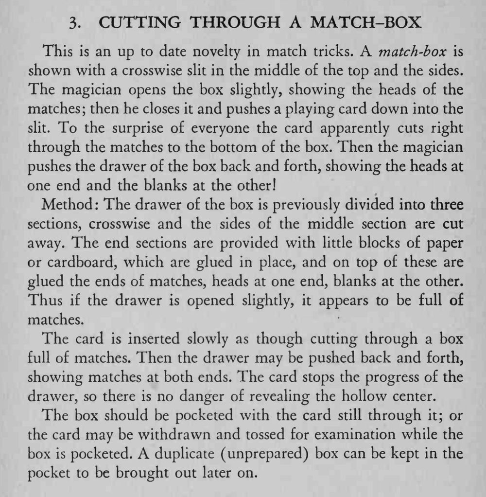

一张扑克牌被按进火柴盒顶上的缝里，像把整盒火柴从中间切开，可把盒子一推一拉，两端都还能看到火柴。
牌插入要慢，推拉内屉时别超过牌挡住的位置。

This is an up to date novelty in match tricks. match-box is shown with a crosswise slit in the middle of the top and the sides. The magician opens the box slightly, showing the heads of the matches; then he closes it and pushes a playing card down into the slit. To the surprise of everyone the card apparently cuts right through the matches to the bottom of the box. Then the magician pushes the drawer of the box back and forth, showing the heads at one end and the blanks at the other! Method The drawer of the box is previously divided into three sections, crosswise and the sides of the middle section are cut away. The end sections are provided with little blocks of paper or cardboard, which are glued in place, and on top of these are glued the ends of matches, heads at one end, blanks at the other. Thus if the drawer is opened slightly, it appears to be full of matches. The card is inserted slowly as though cutting through a box full of matches. Then the drawer may be pushed back and forth, showing matches at both ends. The card stops the progress of the drawer, so there is no danger of revealing the hollow center. The box should be pocketed with the card still through it; or the card may be withdrawn and tossed for examination while the box is pocketed. duplicate (unprepared) box can be kept in the pocket to be brought out later on.